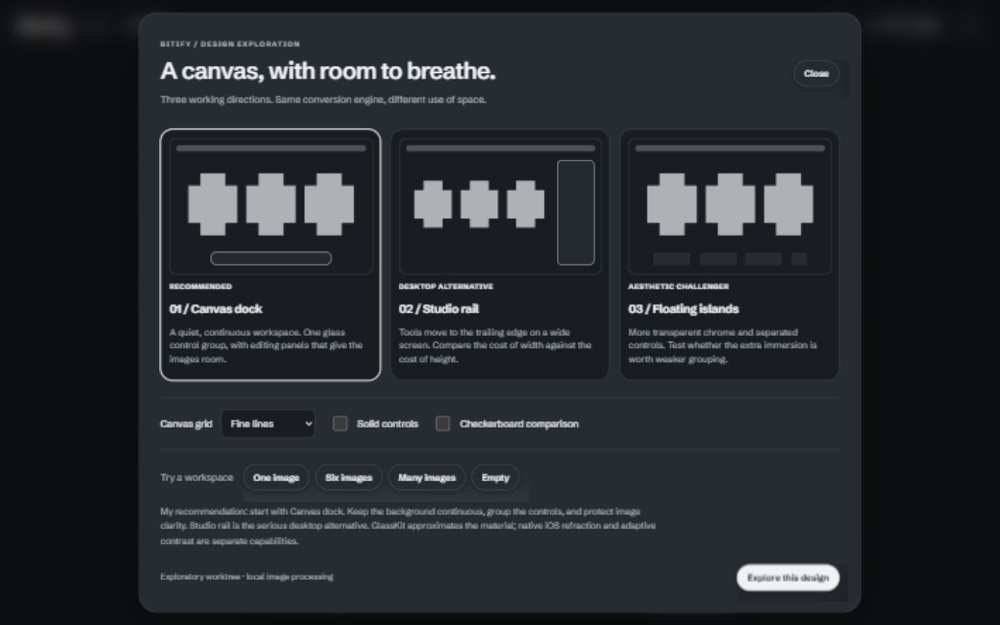
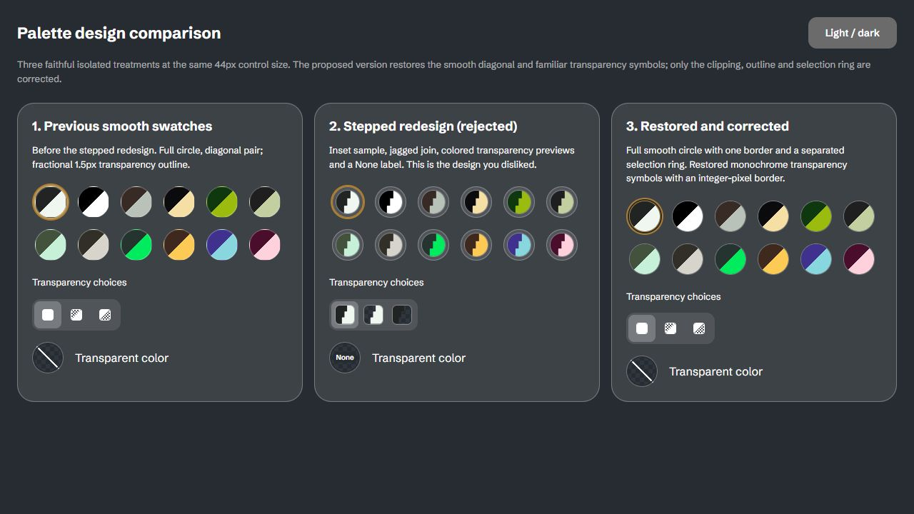
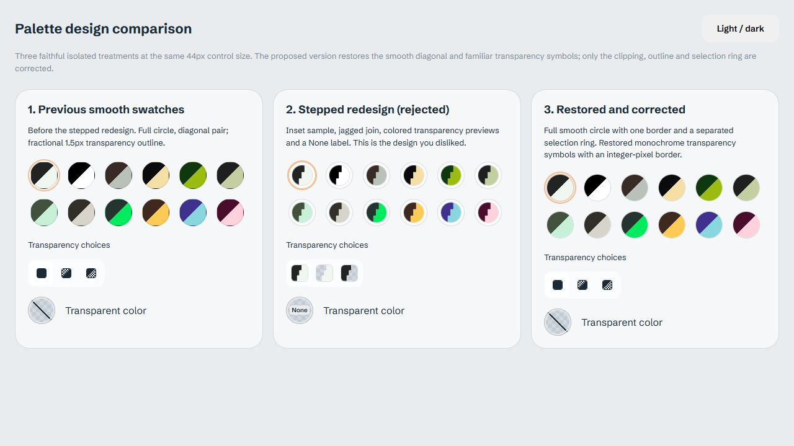

Colorfetti layout studies
Floating islands is the live layout. These unbranded studies preserve layout and palette research. Historical screenshots containing retired branding have been removed.
Open Colorfetti · Design research and validation · Interactive file-action layouts

Earlier interface composition study.

Palette controls: dark material comparison.

Palette controls: light material comparison.